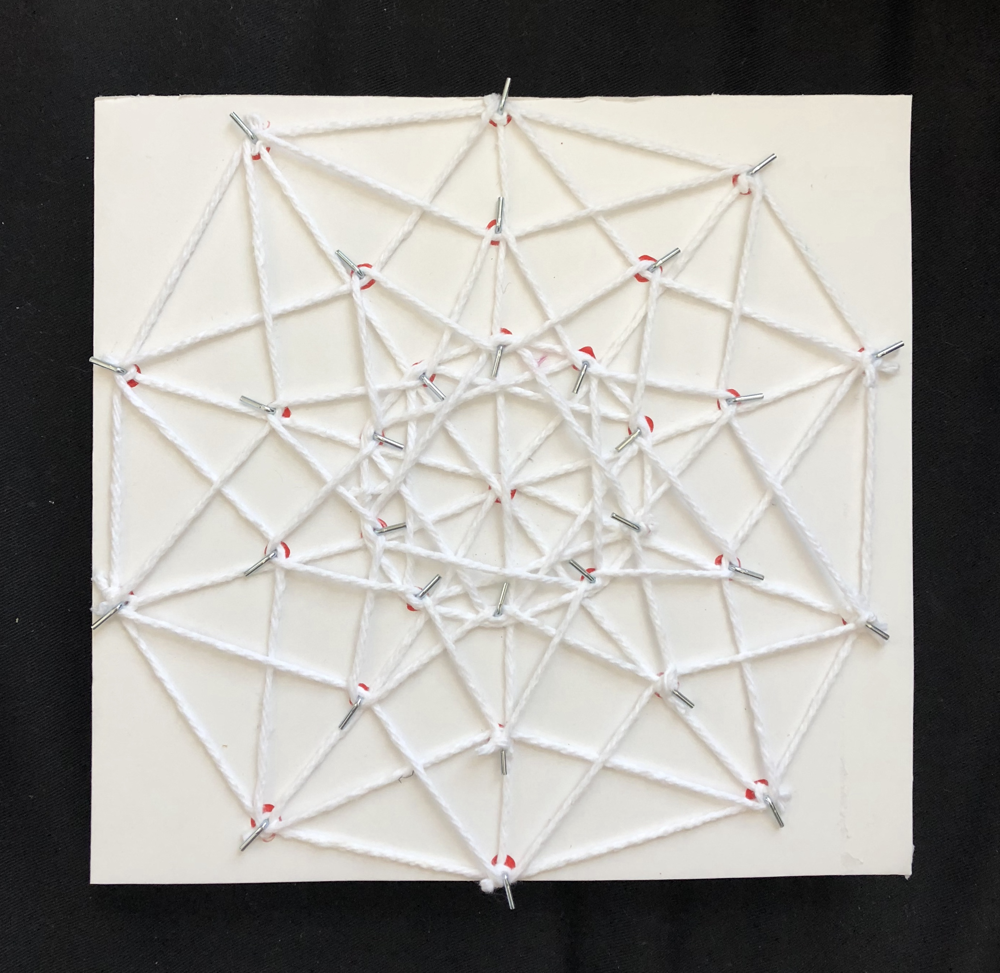
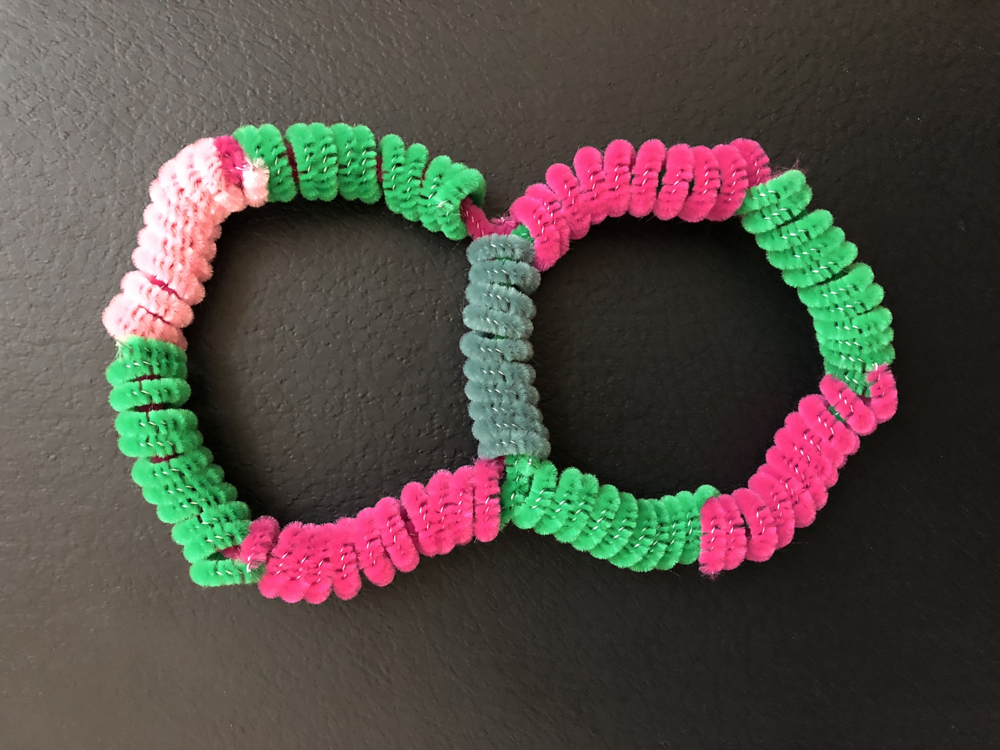
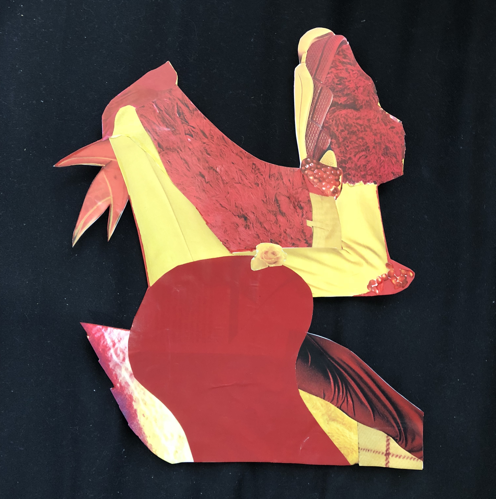
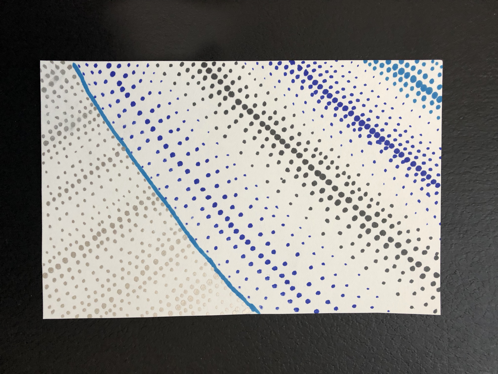

Exploring Dimensions
For this project I set two constraints for my process. The first constraint was that I must explore a different dimension in each "sketch". This could be taken literally or be done in a representational manner. The second constraint was that my color palette be defined by a random page in a magazine. Through the use of these I created the following projects.
5D + Red/White
This is an orthographic projection of a 5-cube. A 5-cube, as its name would suggest, is a 5 dimensional hypercube. This geometry has 32 vertices, 80 edges, 80 square faces, 40 cubic cells, and 10 tesseract 4-faces. In order to visualize these types of geometries we typically use orthographic projections. To build mine I used foam board, some L shaped nails I had, white string, and red marker for the points (which are now almost completely hidden under the string). I was able to find patterns in the edges which allowed me to weave the strings instead of connecting each vertex individually.
3D + Pink/Green
Looking through the easily malleable materials in my apartment I landed on pipe cleaners. Using the ones I had in the appropriate colors I created what is essentially a figure 8 shape. To do this I wrapped pipe cleaners around a pencil forming tight spirals and then ran a straight pipe cleaner through those. I made sure that all spirals were adjacent to a one of a different color.
2D + Red/Yellow
I was inspired by the item in which I found my color palette, a magazine, and created a collage. I cut out all of the appealing yellow and red shapes and subsequently glued these onto a piece of bristol paper, cutting out the remaining white space.
1D + Blue/Black/Silver
I wanted to create something out of 1 dimensional things, points. I went for a pointillism style but varying the size of the points to create texture.
